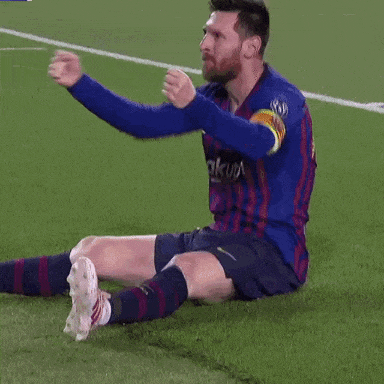

FC Barcelona is a professional multi-sports club based in Barcelona, formed in 1899 by a group of Swiss, Catalan, German and English footballers led by Joan Gamper.
It has been part of the Spanish top-flight, La Liga, since the league's inception in 1928, winning it 26 times, along with a record 31 Copa del Rey and 5 UEFA Champions League victories.
Barcelona is one of the most widely supported teams in the world, and the club has one of the largest social media following in the world among sports teams.
Barcelona players have won a record twelve Ballon d'Or awards, with recipients including Johan Cruyff, as well as a record seven FIFA World Player of the Year awards, with winners including Romário,
 Ronaldo ,
Rivaldo and Ronaldinho.
Ronaldo ,
Rivaldo and Ronaldinho.
In 2010, three players who came through the club's youth academy (Lionel Messi, Andrés Iniesta and Xavi ) were chosen as the three best players in the world in the FIFA Ballon d'Or awards, an unprecedented feat for players from the same football academy.
Additionally, players representing the club have won a record eight European Golden Shoe awards.
The best player in the history of Barcelona - Lionel Messi
Lionel Andrés Messi was born 24 June 1987, also known as Leo Messi,is an Argentine professional footballer who plays as a forward for Ligue 1 club Paris Saint-Germain
and captains the Argentina national team
Widely regarded as one of the greatest players of all time.
Messi has won with barcelona:
Including-
10 La Liga titles
Seven Copa del Rey titles
Four UEFA Champions Leagues.

With his country, he won the 2021 Copa América and the 2022 FIFA World Cup.
A prolific goalscorer and creative playmaker-
Messi holds the records-